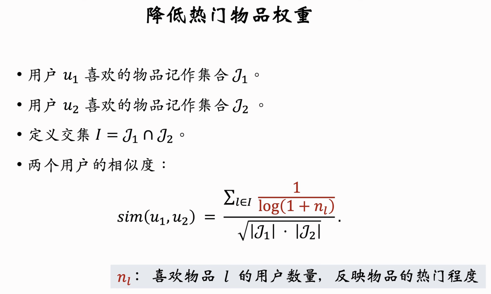

前言
前段时间一直在看NLP相关, 不过最后好像发现没有进入工业界程度的话所有下游任务都是deberta就直接结束了的, kaggle上面LGBM+DeBERTa的方案在最新的竞赛也是首选, 我尝试加了grammar check并做了简单feature engineering但效率其实还是没有提升多少, 再往后可能就只能等比赛结束看top1用的是什么trick了.
而另一方面LDM在调了不少东西之后VQ终于跑通了, 但是第二部分却比我想象的复杂不少, CrossAttention的点和UNet和ddpi结合的点有点复杂, 不过本身也是一个side project, 空下来了再继续就行.
这段时间想要看看Recommender System相关,顺着毕业设计的方向把这个领域摸清楚, 感觉自己基础就打的差不多了. 再后续就得补一补MLFlow和AWS这种工业相关的东西.
Tutorial & Reference
零散的资料: 召回与排序算法总结
比较系统的教学在youtube也有视频: 推荐系统公开课——8小时完整版，讲解工业界真实的推荐系统
Background
Data相关
与推荐系统相关的信号多与产品有关, 举个例子: b站视频发布过后你看到一些相关视频(Impression), 你可能会点进去(Click), 你可能会看完视频(在小红书的示例中被标为ScrollToEnd), 然后点赞收藏投币评论等.
这些都是相关信号, 表示用户对相关内容是否感兴趣, 它们可以转化成训练数据, 对模型有帮助.
指标(短期指标)
- 点击率(CTR): 点击次数 / 曝光次数
- 点赞率: 点赞次数 / 点击次数
- 收藏率: 收藏次数 / 点击次数
- 转发率: 转发次数 / 点击次数
- 阅读完成率: 完成阅读次数 / 点击次数 * \(f\)(笔记长度)
需要注意阅读完成率最后需要对笔记长度做归一化保证对长内容公平.
注意: 指标只是显示用户短期是否感兴趣, 与之对比, 内容多样性如果做得好, 用户可能更具有粘性.
北极星指标(长期指标)
- 用户规模: 日活用户数量(DAU), 月活用户数量(MAU)
- 消费: 人均使用推荐时长, 人均阅读数量(用户上瘾程度)
- 发布: 发布渗透率, 人均发布量.
实验流程
离线实验 -> 小流量AB测试 -> 全流量上线
- 离线测试即收集用户过去信息, 在历史数据上面做训练和测试, 此过程没有涉及算法和用户的交互, 也不会对用户产生负面或正面影响
- 小流量AB测试: 挑选一部分用户做实验组, 一部分做对照组, 对比两者指标完成度, 判断是否可以全流量上线.
- 显著优于旧策略即可以考虑全流量上线.
AB测试
举例:
- 召回团队设计了一种GNN召回通道, 离线实验正向, 需要做AB测试来判断对线上指标影响.
- GNN深度可能可以设置
{1, 2, 3}, 我们需要AB测试来选参数
随机分桶
将n个用户随机分为b个桶, 每个桶就有 $ \frac{n}{b} $ 个用户
用哈希函数将用户ID映射为某区间内的整数, 然后将这些整数均匀分为b个桶. 比如下图选1,2,3做实验组, 4做对照组. 然后统计每个桶的业务指标, 比如DAU, CTR等, 如果某个实验组效果显著, 说明策略有效, 可以推全.
分层实验
一个产品可能包含很多部门, 大家都需要做AB实验. 假如我们将用户分10个桶, 那么最多只能开9个实验, 显然不够使用.
解决方案是分层实验: 同层互斥, 不同层正交.
- 召回层作为单独一层, 比如GNN实验占了召回层4个桶, 那么其他召回实验就只能选其他6个桶.
- UI层作为另外一层, 和召回层不同层, 因此还是可以使用全部10个桶.
召回层10%的用户打散分到UI层, UI层选一个桶之后只有10% * 10% = 1% 的交集.
Holdout机制
业务考核相关, 为了计算某部门对业务指标的整体提升, 我们可以取10%作为holdout桶, 部门所有AB实验使用其余90%用户, 最终考核用90%用户归一化与10%holdout做diff.
考核周期结束清除holdout推广实验从90%到100%, 重新划分用户开始下一轮周期.
反转实验
当实验策略取得显著效果, 我们希望推全, 但同时有些指标存在滞后性, 需要长期观测.
- 保留观测好处: 观测到的指标更准确
- 尽快推全好处: 腾出桶供其他同层实验使用, 或是基于新策略做后续开发.
反转实验解决方法: 新开一层, 留下小部分用户作为反转桶, 其他用户推全新策略.
考核周期结束清除holdout的时候依旧保留反转桶, 只将推全的策略运用到holdout上.
当反转实验完成的时候, 关闭反转实验, 清除反转桶, 真正推广新策略到全部用户.
Pipline
推荐系统的Pipline一般分为: 召回 -> 粗排 -> 精排 -> 重排
- 召回通过不同召回通道取数据, 每个通道取几十几百, 目的是将百万级及以上数据过滤到千级.
- 粗排: 用简单的机器学习模型打分, 按分数做排序和截断, 将千级数据过滤到百级.
- 精排: 还是打分, 不过区别于粗排, 这里需要上模型复杂度, 怎么准确怎么来.
- 重排: 依据精排分数和多样性随机抽样, 依据产品策略和多样性需求来重新内部排列精排结果并插入广告之类运营内容.
召回
召回通道: 协同过滤 (Collaborative Filtering), 双塔模型, 关注的作者等.
itemCF
说人话就是依据user对item的喜好程度加上item之间的相似度做推荐.
- 用户喜欢物品1, 且物品1和物品2很相似
- 那么用户很可能喜欢物品2
\[ \sum_j like(user, item_j) \times sim(item_j, item) \]
其中like表示user对item的喜爱程度, 比如可以用score表示
similarity
下面是一个计算相似度的例子
\[ sim(i_1, i_2) = \frac{\left| v \right|}{\sqrt{\left|{w_1}\right|\cdot\left|{w_2}\right|}} \]
其中喜欢物品$ i_1 $ 的为$ w_1 $, 喜欢物品 $ i_2 $的为 $ w_2 $, v为 $ w_1 \cap w_2 $. 不过此公式为集合形式,没考虑权重, 只有喜欢或不喜欢.
cosine similarity
也可以选择用cosine similarity
\[ sim(i_1, i_2) = \frac{\sum_{v \in V} like(v, i_1) \cdot like(v, i_2)}{\sqrt{\sum_{u_1 \in w_1}like^2(u_1, i_1)} \cdot {\sqrt{\sum_{u_2 \in w_2}like^2(u_2, i_2)}}} \]
这里like只可取0或1的时候就是上面的公式.
工业化使用
由于两两计算物品相似度是非常耗时的工作, 所以工业界采用离线计算的方式.
离线:
- 首先记录
用户->物品的索引, 记录每个用户最近感兴趣的物品.
- 然后建立
物品->物品的索引, 计算物品两两相似度, 并且取最相似的topk, 从而给定一个物品, 我们能够快速返回最相似的k个物品.
线上:
- 给定用户ID, 通过
用户->物品索引, 找出用户近期感兴趣物品列表(last_n)
- 对于last_n, 我们通过
物品->物品索引, 找出最相似的k个物品
- 对于取回的nk个物品, 用公式计算用户对物品的感兴趣程度
- 返回100个分数最高的物品作为召回结果
总结:
使用索引离线计算量大, 线上计算量小. 不过离线本身计算不是太复杂都是可以接受的, 主要线上必须能够迅速给出结果, 这种方式线上可以快速得到反馈, 所以能够得到使用.
Swing
类似itemCF, 不过区别的地方在于相似度计算, itemCF中物品重合用户越多表示越相似
Swing从另一个角度出发: 如果两个用户本身交集很小, 但是同时喜欢物品i和物品j, 那么说明i和j相似. 公式如下
\[ s(i, j) = \sum_{u \in U_i \cap U_j} \sum_{v \in U_i \cap U_j} \frac{1}{\alpha + \left| I_u \cap I_v \right|} \]
$ U_i $表示点击商品i的所有用户, $ I_u $表示用户u点击的所有商品, 翻译过来就是: 对于共同点击商品i,j的用户，如果用户之间共同点击的商品越少则商品 i,j 就越相似.
userCF
\[ \sum_j sim(user, user_j) \times like(user_j, item) \]
几乎和itemCF完全一致,区别在于相似度为user与user之间. 另外就是userCF中存在一个降低热门物品权重的子问题, 当某用户的相似用户集里面很多人喜欢某个热门物品的时候, 我们应该降低热门物品的权重, 比如下图就采用了 1/log(1+热门程度)这种方式来解决此问题

工业化使用流程也和itemCF很类似, 建立 用户->物品 索引和 用户->用户 索引, 然后快速返回最相似的k个用户和用户最喜欢的last_n个物品, 复杂度kn.
矩阵补充(not working)
思路非常简单: 每个user对应一个embedding, 每个item对应一个embedding, 利用内积来预测用户评分从而学习embedding.
缺点:
- 只利用了embedding, 其他所有信息都没有使用(比如物品的物品属性, 关键词, 地理位置等, 用户的性别,年龄,感兴趣类别等).
- 其次, 负样本选择也有问题: 样本曝光之后被点击算正样本是正确的, 但是不点击并不代表是用户不感兴趣, 只能算作score没有正样本高(个人思考, 后续视频还没看完).
- 训练方法只用了内积, 不如余弦相似度.
- 最后是作者提到的矩阵补充使用regression, 就task type而言不如classification并表示工业界一般都是classification.
工业界做法(复杂度处理)
存储: 用户可以直接存kv表, 通过查询用户k从而得到用户的embedding值v. 而item的话因为数量庞大, 所以索引构造比较复杂, 从后面的内容来看, 似乎是通过将item分扇区来建立索引了.
查找: 用户可以直接查表, 而求内积理论就需要枚举item然后获取向量然后求解. 但是这里存在问题, 如果靠枚举的话, 时间复杂度正比物品数量, 而物品的数量又特别庞大, 这是不可接受的.
Approximate Nearest Neighbor Search: Milvus, Faiss, Hnswlib等系统就支持最近邻查找.
衡量标准也有如下:
- L2距离
- 内积
- 夹角余弦(cosine similarity)
假如系统不支持余弦相似度, 可以对模做归一化, 从而内积即余弦相似度.
最近邻查找就是将点在空间中划分扇区, 取扇区代表向量与目标用户求相似度, 从而知道用户与哪一个扇区相似度较高. 进而我们通过扇区找到扇区内所有点, 再枚举所有点做内积. 这样复杂度可以从 n 变成 $ \sqrt(n) $.
双塔模型
结构
类似矩阵召回, 但是是升级版. 矩阵召回直接将embedding做相似度计算, 而双塔模型则是将特征完全融合之后再求相似度.
- id信息会扩充为embedding; 离散特征类别少用one-hot, 类别多用多种embedding; 连续变量做归一化和一些简单预处理.
- concat之后feed到神经网络, 求出用户或者物品的表征.
- 最后基于两个表征求余弦相似度.
训练
训练模式存在三种, pointwise, pairwise, listwise.
- pointwise: 独立看待每个样本, 然后做二分类. 鼓励正样本预测1, 负样本预测-1. 然后样本一般正:负=1:2或者1:3(作者原话:"我也不知道为什么但互联网大厂的人都这么做").
- pairwise: 正负样本每一组每一组地看. 基本思路是鼓励预测的正样本相似度大于负样本相似度; 如果cos(a, b+) - cos(a, b-) > threshold, 则我们认为没有损失. 损失函数可以用triplet hinge loss:
$ L(a, b+, b-) = max{0, cos(a, b-) + threshold - cos(a, b+)} $, 或者换成logistic也可以, 反正能正确反应正负样本关系即可.
- listwise: 取一个正样本和多个负样本, 然后用softmax和crossentropy, 目标是softmax之后的正样本趋近于1, 而负样本趋近于0.
不适合召回的模型
召回的目标是大量数据, 所以需求遍历的模型就不适合召回.
个人理解:
这个模型的神经网络需要用户和物品两边的特征输入并做前期的特征融合, 这种方法就必须线上使用神经网络跑一遍遍历, 复杂度不可接受.
对比之下双塔模型后期融合, 前期表征计算完毕可以直接存储, 需求计算相似度的时候直接依据索引取出, 复杂度仅在于相似度计算而不用线上再跑神经网络, 这才是召回应该采用的模型.
粗排和精排
很相似, 但是精排模型更大, 特征更多.
输入用户特征, 物品特征以及统计特征, 模型预测并输出相关指标, 最终我们对输出指标打分, 这个分数就作为最终排序分数.

重排
多样性抽样: MRR, DPP
依据为精排分数以及内容多样性, 抽样之后规则打散, 搭配运营策略呈现.